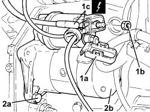
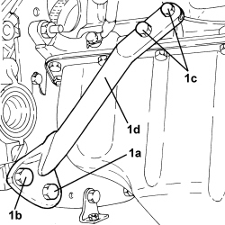
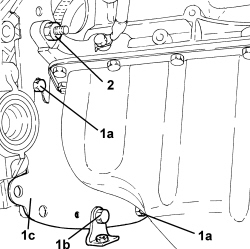
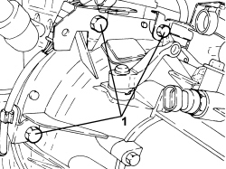

1004D10 POWER UNIT (MANUAL GEARBOX), REMOVED, REMOVE AND REASSEMBLE
- Path
- Procedures > 10 ENGINE > 1004 ENGINE AND POWER UNIT > 1004D remove engine and wash > 1004D10 POWER UNIT (MANUAL GEARBOX), REMOVED, REMOVE AND REASSEMBLE
- Kind
- repair procedure (removal / refitting; the operation number is the code)
- Applies to
- engines: 1.4 8v; all production periods
- Interactive page
- https://sloeber94.github.io/elrnDB-fDbl/en/#/223000116
Applies to: engines: 1.4 8v; all production periods
 Removing
Removing
 Refitting
Refitting1. Open the protective cover (1a), loosen the nut (1b) and disconnect the wiring (1c) from the starter motor.
Description | Connector | |
|---|---|---|
1c | Starter motor |
2. Undo the bolts (2a) and remove the starter motor (2b).

Applies to: engines: 1.4 8v; all production periods
1. Unscrew bolt (1a), screws (1b) and (1c) and remove the reinforcement bracket (1d).

Applies to: engines: 1.4 8v; all production periods
1. Undo the screws (1a), bolt (1b) and remove the flywheel side oil seal cover (1c).
- Recover the exhaust manifold mounting bracket.
2. Undo the nut fixing the gearbox to the cylinder block/crankcase.

Applies to: engines: 1.4 8v; all production periods
1. Undo the remaining bolts fixing the gearbox to the engine block.
- Remove the gearbox from the engine.

Applies to: engines: 1.4 8v; all production periods
1. Fit the flywheel lock.
Description | Code | Function | |
|---|---|---|---|
1 | Counter-torque | 1.860.846.000 | Flywheel lock |
2. Undo the bolts (2a) and remove the clutch mechanism assembly (2b).

Applies to: engines: 1.4 8v; all production periods
Refitting
Removing- Refit the clutch mechanism assembly using the centring tool.
Description | Code | Function | |
|---|---|---|---|
- | Centering | 1.875.086.000 | Removing-refitting clutch plate/mechanism |
- Tighten the bolts securing the clutch mechanism to the recommended torque.
Value daNm | Fastening | Component | dia | |
|---|---|---|---|---|
- | 1.2 ÷ 1.5 | Clutch mechanism | Bolt (to be replaced) | M6 |
- Remove the centring tool.
Description | Code | Function | |
|---|---|---|---|
- | Centering | 1.875.086.000 | Removing-refitting clutch plate/mechanism |
- Remove the flywheel lock.
Description | Code | Function | |
|---|---|---|---|
- | Counter-torque | 1.860.846.000 | Flywheel lock |
- Place the manual gearbox in position and secure it tightening the bolts and nut to the recommended torque.
Value daNm | Fastening | Component | dia | |
|---|---|---|---|---|
- | 4.8 ÷ 7.2 | Manual gearbox to engine - crankcase side | Bolt | M12 |
Value daNm | Fastening | Component | dia | |
|---|---|---|---|---|
- | 4.8 ÷ 7.2 | Manual gearbox to engine - crankcase side | Nut | M12 |
- Place the engine flywheel protective cover back in its housing and secure it using the bolts.
- Refit the exhaust pipe bracket and secure by tightening the bolt to the specified torque.
Value daNm | Fastening | Component | dia | |
|---|---|---|---|---|
- | 4.5 ÷ 5.5 | Exhaust pipe mounting bracket | Bolt | M10 |
- Place the reinforcement pillar in its housing and secure it tightening the screws and bolt to the recommended torque.
Value daNm | Fastening | Component | dia | |
|---|---|---|---|---|
- | 2.2 ÷ 2.7 | Bracket joining manual gearbox/differential to engine - differential side | Bolt | M8 |
Value daNm | Fastening | Component | dia | |
|---|---|---|---|---|
- | 5.0 ÷ 6.0 | Bracket joining manual gearbox/differential to engine - gearbox side | Bolt | M12 |
Value daNm | Fastening | Component | dia | |
|---|---|---|---|---|
- | 3.6 ÷ 4.4 | Bracket joining manual gearbox/differential to engine - gearbox side | Bolt | M10 |
- Place the starter motor in its housing and secure it tightening the bolts to the recommended torque.
Value daNm | Fastening | Component | dia | |
|---|---|---|---|---|
- | 2.25 ÷ 2.75 | Starter motor | Bolt | M8 |
- Connect the starter motor electrical wiring, tighten the nut and close the protective cover.